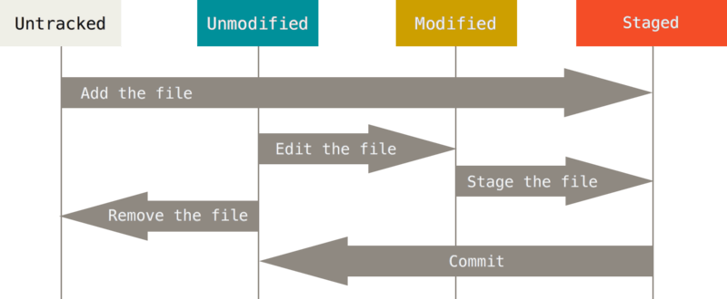
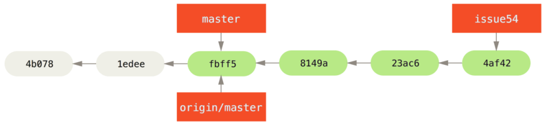

Git简明教程
Table of Contents
本文参照 Pro-Git 英文版第二版，介绍了git的基本使用方法，以及简单的多人项目合作流程。
1 安装与首次使用git
1.1 Linux
git 在很多Linux发行版中是自带的，可在命令行中输入 git 来检查是否已安装git。
如果未安装git，可通过包管理器安装，如Ubuntu中
$ sudo apt-get install git
1.2 Windows
Windows 系统需要前往git官网下载安装文件： https://git-scm.com/downloads
1.3 首次使用
首次使用git前需要先设置自己的名字和邮箱，该信息在以后提交文件时将作为作者信息一并提交。
$ git config --global user.name "your name" $ git config --global user.mail example@example.com
2 初始化项目的git仓库
使用git前需要先初始化项目的git仓库。
你可以使用 git clone 命令直接从远程克隆一个仓库到本地，如：
$ git clone https://github.com/libgit2/libgit2
如果是自己本地建的项目，则需要手动初始化一个仓库：
- 在项目的根文件目录下打开git bash
- 输入
git init，建立项目的本地仓库 - （可选）在eclipse中右击项目选择Team->share project，点finish。Andriod Studio无此步骤。 此步骤是为了使用IDE自动生成.gitignore文件，若不用IDE也可以手写此文件。
3 本地仓库操作
3.1 基本操作
首先通过下面的两幅图熟悉git项目的结构和文件状态。 Working Directory是你的工作目录。 Staging区域是一个缓存区，放置准备提交仓库的文件。 一旦把staging区域的文件提交到仓库中，就会作为历史记录永久保存下来。 下面是一系列用于提交文件的命令：
git add <文件名>将工作目录的文件添加到staging区域。git add *添加所有文件到staging区域。git commit打开一个编辑器编辑说明，然后将staging区域的文件提交到仓库中。git commit -m “说明”将staging区域的文件提交到仓库中，附带简单说明。git commit -a将工作区域的文件直接提交，跳过stage操作git status查看当前的文件状态。

Figure 1: git项目的结构

Figure 2: 项目文件的不同状态
举例：
$ git add README #添加README文件到staging区域 $ git status #查看当前的文件状态，可以看到README文件已添加到staging区域，并准备提交 On branch master Your branch is up-to-date with 'origin/master'. Changes to be committed: (use "git reset HEAD <file>..." to unstage) new file: README
下一步可以提交更改到仓库中 ：
$ git commit
这条命令会打开一个编辑器让你编辑提交说明，当你保存退出后， git就会创建一个提交记录，附带你刚才编辑的提交说明。
也许你只想写一条很简短的说明，并不想打开一个编辑器，
那么也可以在提交命令中附加简短说明，说明放在 -m 参数后，用引号括起来：
$ git commit -m "Story 182: Fix benchmarks for speed" [master 463dc4f] Story 182: Fix benchmarks for speed 2 files changed, 2 insertions(+) create mode 100644 README
这样就完成了一个提交。
文件的提交历史可以用 git log 命令查看，不同的参数可以显示不同的格式：
git log查看历史记录git log -p显示详细更改信息，git log --pretty=oneline显示简略信息git log --pretty=oneline --graph显示项目分支合并图。
举例：
$ git log --pretty=oneline ca82a6dff817ec66f44342007202690a93763949 changed the version number 085bb3bcb608e1e8451d4b2432f8ecbe6306e7e7 removed unnecessary test a11bef06a3f659402fe7563abf99ad00de2209e6 first commit
每一条历史记录使用惟一的哈希码标注（就是前面的那串字符）。使用哈希码的前几位 就可以切换到不同历史记录，即用所选历史记录的文件覆盖当前工作区。在此之前当前 工作区必须是干净的，即不能有未提交的更改，否则必须提交一次以清空工作区，若不想提交也可以暂时缓存工作区（参见stash的用法）。
git checkout <hash code>查看历史记录
举例：
$ git checkout ca82a #切换到ca82a的历史记录。 $ git checkout master #切换回master分支
3.2 基本分支操作
Git里的分支就是一个可以移动的指针，指向了某个历史记录。
默认的分支名是 master 。每次提交后， master 都会指向你刚才的提交记录。
git branch <new branch nama>创建一个新分支git checkout -b <new branch name>创建一个新分支并切换到它
举例来说，执行下面的命令将创建一个新的testing分支，指向当前记录。
$ git branch testing
此时的历史记录如下所示：
Figure 3: 创建分支，尚未切换分支
Git有一个特殊的指针名为HEAD，它指向了当前记录。在图中可以看到，
HEAD指向了master，并未指向刚创建的testing（虽然他们都指向了同一个记录）。
要切换到testing分支上，依然是使用 git checkout 命令。
$ git checkout testing
此时的历史记录如下所示：

Figure 4: 切换分支后
如果此时我们新提交一个记录
$ vim test.rb $ git commit -a -m "made a change"
此时的历史记录就会如下所示。可以看到，HEAD 已经跟随testing分支而不是master分支移动了。
Figure 5: 提交新历史记录后
3.3 合并分支
假设现在的分支状况如下所示。首先你有一个master分支，然后你创建了iss53分支并在此工作。 后来出现了一个需要紧急处理的bug，所以你又在master的基础上创建了hotfix分支。
Figure 6: 合并前状态
假设你的bug已经处理完毕，此时需要将hotfix分支合并到master上，只需执行下面的指令
$ git checkout master #首先切换到master $ git merge hotfix #合并hotfix Updating f42c576..3a0874c Fast-forward index.html | 2 ++ 1 file changed, 2 insertions(+)
此时git使用了最简单的Faster-forward方式合并了分支。此时的历史记录如下所示：

Figure 7: 合并hotfix分支
此时你就可以删除hotfix分支了
$ git branch -d hotfix Deleted branch hotfix (3a0874c).
现在你就可以回到iss53分支上继续之前的工作了。假设你工作了一段时间后，历史记录如下所示：
Figure 8: 合并iss53前状态
现在依然可以使用之前的方法合并iss53分支：
$ git checkout master Switched to branch 'master' $ git merge iss53 Merge made by the 'recursive' strategy. index.html | 1 + 1 file changed, 1 insertion(+)
如果iss53和master没有冲突（也就是没有修改相同文件的相同部分）的话， git仍将顺利合并，否则会提示检查到冲突：
$ git merge iss53 Auto-merging index.html CONFLICT (content): Merge conflict in index.html Automatic merge failed; fix conflicts and then commit the result.
这意味着你需要打开 index.html 文件并手动解决冲突才能继续合并。
git会使用标准的冲突标记标注冲突的地方。比如：
<<<<<<< HEAD:index.html <div id="footer">contact : email.support@github.com</div> ======= <div id="footer"> please contact us at support@github.com </div> >>>>>>> iss53:index.html
上面的代码表示用等号隔开的上半部分是当前HEAD指向的内容，
下半部分是要合并到HEAD中的文件内容。
现在你要么使用HEAD要么使用iss53的代码覆盖上述整个冲突块，
要么自己合并两个块的代码。处理完后，对冲突的文件运行 git add 命令，
以标记它们冲突已解决。然后运行 git commit 来完成合并。
这次的提交是合并提交，你可以在提交信息中具体说明解决了哪些冲突以备以后查看。
4 远程仓库操作
4.1 远程仓库管理
git remote查看与本地仓库关联的远程仓库名。
加上 -v 选项可以查看与之关联的URL。例如：
$ git remote -v origin https://github.com/schacon/ticgit (fetch) origin https://github.com/schacon/ticgit (push)
git remote add <shortname> <url>添加新远程仓库。git remote show [remote-name]查看某个远程仓库信息git remote rename [old-name] [new-name]重命名远程仓库git remote remote rm [remote-name]删除远程仓库
例如我想添加一个名为pb的远程仓库：
$ git remote #此时只有origin origin $ git remote add pb https://github.com/paulboone/ticgit #添加了pb $ git remote -v #多了pb origin https://github.com/schacon/ticgit (fetch) origin https://github.com/schacon/ticgit (push) pb https://github.com/paulboone/ticgit (fetch) pb https://github.com/paulboone/ticgit (push)
查看origin远程仓库的信息：
$ git remote show origin * remote origin Fetch URL: https://github.com/schacon/ticgit Push URL: https://github.com/schacon/ticgit HEAD branch: master Remote branches: master tracked dev-branch tracked Local branch configured for 'git pull': master merges with remote master Local ref configured for 'git push': master pushes to master (up to date)
把pb重命名为paul：
$ git remote rename pb paul $ git remote #pb变成了paul origin paul
移除paul远程仓库：
$ git remote rm paul $ git remote #paul仓库已删除 origin
4.2 获取远程仓库数据
此时我想将pb上有而我没有的信息拉下来，可以执行：
$ git fetch pb remote: Counting objects: 43, done. remote: Compressing objects: 100% (36/36), done. remote: Total 43 (delta 10), reused 31 (delta 5) Unpacking objects: 100% (43/43), done. From https://github.com/paulboone/ticgit * [new branch] master -> pb/master * [new branch] ticgit -> pb/ticgit
正如你所看到的，要从远程项目中获取数据，可以执行：
git fetch [remote-name]获取远程仓库中有而本地没有的数据
如果你克隆了一个远程仓库，git会自动关联那个远程仓库，并取名为origin。
值得注意的是， git fetch 只会下载数据，不会合并分支，你仍然需要手动合并。
如果你现在所处于的分支关联了一个远程分支，
你可以使用 git pull 命令来自动获取并尝试合并远程分支，有时使用 git pull 会更方便一些。
git pull如果当前分支关联了一个远程分支，则自动获取并尝试合并远程分支
4.3 向远程仓库中推送数据
当你写好了本地代码并做好了测试，你可能会想将其推送到远程仓库中。此时可以使用：
git push [remote-name] [branch-name]推送本地分支到远程仓库
例如：
$ git push origin master
如果你有对远程仓库的写权限，并且之前没有其他人推送过代码，那你可以顺利推送。
如果有人在你之前也推送过代码，你的推送请求会被拒绝，
因为你要先使用 fetch merge 或 pull 的指令来与远程同步。
4.4 关联远程分支
假如在上一节中你成功推送了一个叫做serverfix的分支：
$ git push origin serverfix Counting objects: 24, done. Delta compression using up to 8 threads. Compressing objects: 100% (15/15), done. Writing objects: 100% (24/24), 1.91 KiB | 0 bytes/s, done. Total 24 (delta 2), reused 0 (delta 0) To https://github.com/schacon/simplegit * [new branch] serverfix -> serverfix
此时远程仓库中会多了一个名为 serverfix 的分支。
如果此时有另一个人从远程仓库中获取代码：
$ git fetch origin remote: Counting objects: 7, done. remote: Compressing objects: 100% (2/2), done. remote: Total 3 (delta 0), reused 3 (delta 0) Unpacking objects: 100% (3/3), done. From https://github.com/schacon/simplegit * [new branch] serverfix -> origin/serverfix
那么他会在本地获得 serverfix 分支的引用，名为 origin/serverfix 。
你可以执行 git merge origin/serverfix 来合并该远程分支。
然而由于该分支只是一个引用，并没有实际数据，所以你并不能切换到它。
如果你想拥有一个本地数据，可以：
$ git checkout -b serverfix origin/serverfix Branch serverfix set up to track remote branch serverfix from origin. Switched to a new branch 'serverfix'
这样就建立了一个新的名为 serverfix 的分支，关联到远程分支，并且切换到了它。
由于上述命令很常用，故git有一个它的简写：
$ git checkout --track origin/serverfix Branch serverfix set up to track remote branch serverfix from origin. Switched to a new branch 'serverfix'
事实上，由于这个命令太常用了，git甚至有它的简写的简写。 如果你要创建的分支名尚未存在，并且只与一个要关联的远程分支名相同， 那么下面的命令会自动创建一个关联远程分支的本地分支，并切换到它：
$ git checkout serverfix Branch serverfix set up to track remote branch serverfix from origin. Switched to a new branch 'serverfix'
4.5 删除远程分支
假如在serverfix分支上已经完成了一个项目的新特性，该新特性已经加入了项目的master分支中， 并且大家都不需要这个远程分支了，可以使用下面的命令删除远程分支：
$ git push origin --delete serverfix To https://github.com/schacon/simplegit - [deleted] serverfix
5 项目协作
5.1 私有小型项目协作
我们使用一个两人协作的例子来说明git的分布式协作流程。 John和Jessica共同维护一个远程仓库。首先，Jonh克隆了这个远程仓库， 做了一些修改，然后提交到了本地仓库中：
$ git clone john@githost:simplegit.git Cloning into 'simplegit'... ... $ cd simplegit/ $ vim lib/simplegit.rb $ git commit -am 'removed invalid default value' [master 738ee87] removed invalid default value 1 files changed, 1 insertions(+), 1 deletions(-)
然后，第二个开发者Jessica也作了同样的事，克隆了远程仓库并提交了本地更改。
$ git clone jessica@githost:simplegit.git Cloning into 'simplegit'... ... $ cd simplegit/ $ vim TODO $ git commit -am 'add reset task' [master fbff5bc] add reset task 1 files changed, 1 insertions(+), 0 deletions(-)
现在，Jessica将她的工作推送到了远程仓库中：
$ git push origin master ... To jessica@githost:simplegit.git 1edee6b..fbff5bc master -> master
John此时也希望推送自己的工作，却发现被拒绝了：
$ git push origin master To john@githost:simplegit.git ! [rejected] master -> master (non-fast forward) error: failed to push some refs to 'john@githost:simplegit.git'
因为Jessica已经改变了远程仓库中的文件， 所以John此时必须首先获取远程仓库的最新数据：
$ git fetch origin ... From john@githost:simplegit + 049d078...fbff5bc master -> origin/master
此时John的本地仓库状态如下所示：
Figure 9: John的本地仓库历史（合并前）
可以看到，John本地有一个Jessica推送的新分支的引用 origin/master ，
他必须把这个新分支合并到自己的工作中才能继续推送：
$ git merge origin/master Merge made by recursive. TODO | 1 + 1 files changed, 1 insertions(+), 0 deletions(-)
合并以后，John的本地仓库状态如下所示：
Figure 10: John的本地仓库历史（合并后）
现在，John应该测试一下他的代码看看是否仍然正常工作， 然后他就可以把自己合并后的工作推送到远程了：
$ git push origin master ... To john@githost:simplegit.git fbff5bc..72bbc59 master -> master
最终，John的本地仓库状态如下所示：
Figure 11: John的本地仓库历史（提交远程后）
与此同时，Jessica在本地开启了一个新分支issue54并在此工作， 她进行了三次本地提交，不过尚未获取John提交的内容。 此时她的本地仓库状态如下所示：

Figure 12: Jessica的本地仓库历史（获取John的数据前）
Jessica现在想与John新提交的数据同步，所以执行了 fetch 命令：
$ git fetch origin ... From jessica@githost:simplegit fbff5bc..72bbc59 master -> origin/master
现在Jessica的本地库中有了John新提交内容的引用：
Figure 13: Jessica的本地仓库历史（获取John的数据后）
Jessica觉得她的issue54分支已经写好了，
但她想知道目前需要合并哪些分支才能推送出去，所以她执行了 git log 来查看历史：
$ git log --no-merges issue54..origin/master commit 738ee872852dfaa9d6634e0dea7a324040193016 Author: John Smith <jsmith@example.com> Date: Fri May 29 16:01:27 2009 -0700 removed invalid default value
命令中的 issue54..origin/master 是一个log过滤器，
它表示让log只显示 origin/master 中有而 issue54 中没有的提交。
从结果中看，只有一个John推送的提交Jessica没有合并，
它就是合并 origin/master 后唯一一个会改变Jessica本地库的提交。
首先，Jessica要切换到 master 分支：
$ git checkout master Switched to branch 'master' Your branch is behind 'origin/master' by 2 commits, and can be fast-forwarded.
现在，Jessica可以先合并 origin/master 或 issue54 分支。
由于它们都是上游的分支，所以先合并哪一个都行:
$ git merge issue54 Updating fbff5bc..4af4298 Fast forward README | 1 + lib/simplegit.rb | 6 +++++- 2 files changed, 6 insertions(+), 1 deletions(-) $ git merge origin/master Auto-merging lib/simplegit.rb Merge made by recursive. lib/simplegit.rb | 2 +- 1 files changed, 1 insertions(+), 1 deletions(-)
所有合并都已完成，Jessica的历史记录如下所示：
Figure 14: Jessica的本地仓库历史（合并两个分支后）
现在Jessica可以推送自己的工作了（假设在此期间John没有推送）：
$ git push origin master ... To jessica@githost:simplegit.git 72bbc59..8059c15 master -> master
Figure 15: Jessica的本地仓库历史（推送后）
这就是最简单的多人合作流程。你在某一个分支中进行自己的工作，
然后不断合并到自己的master分支中。
当你想要向远程推送时，首先要先获取并合并远程分支（通常是 origin/master ），
然后把自己的分支推送到远程。